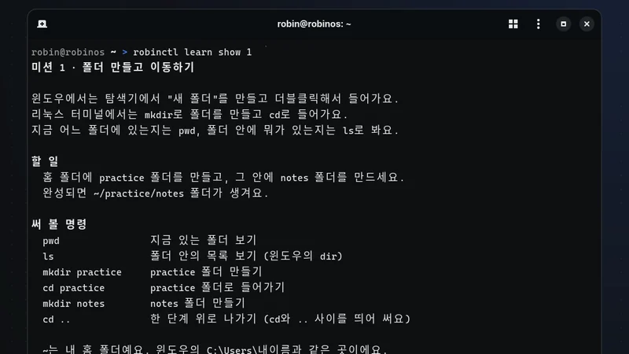
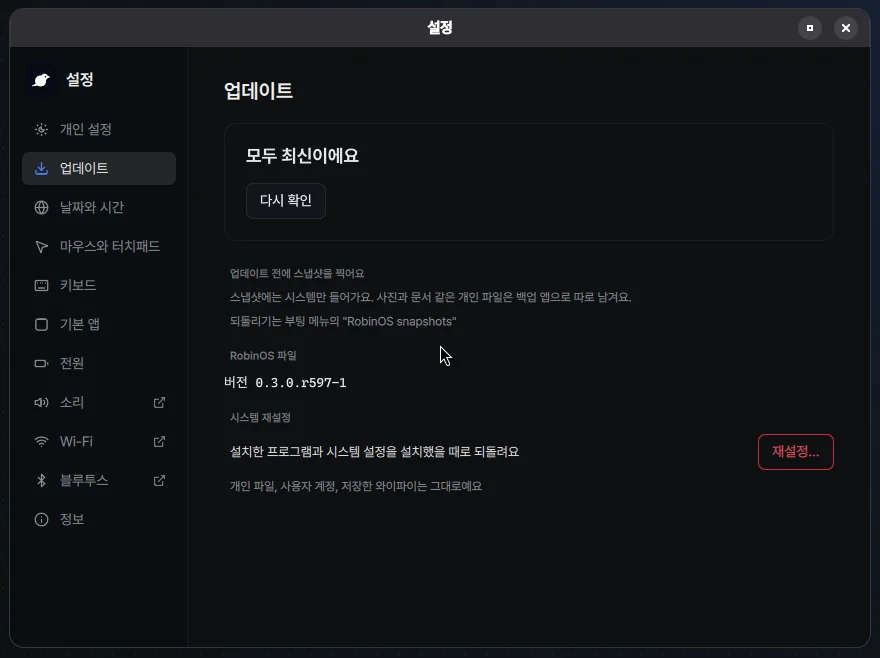
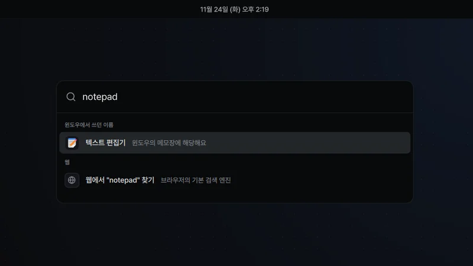
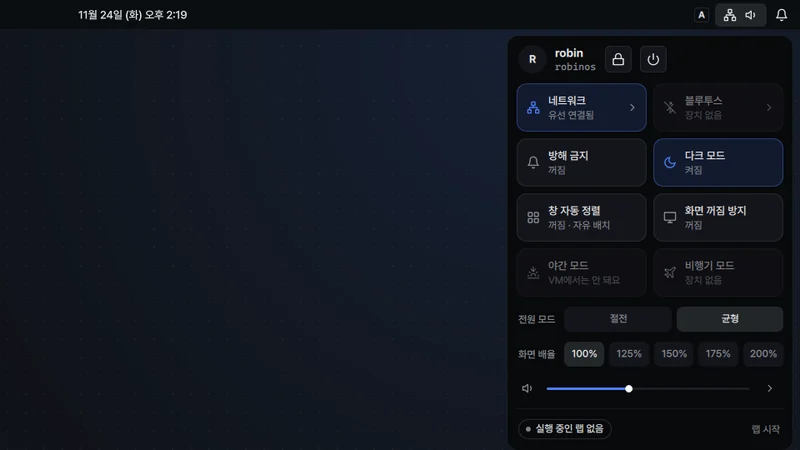
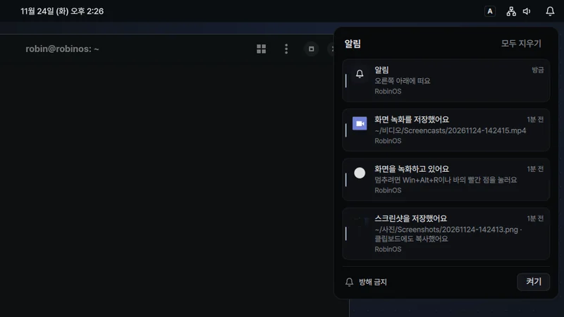
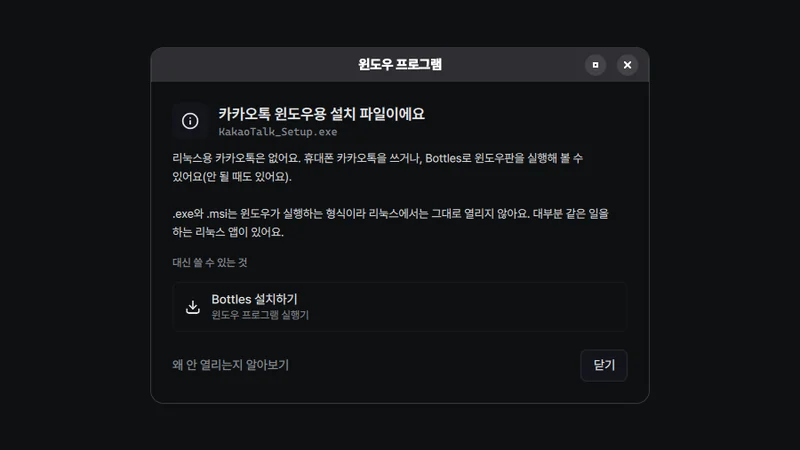
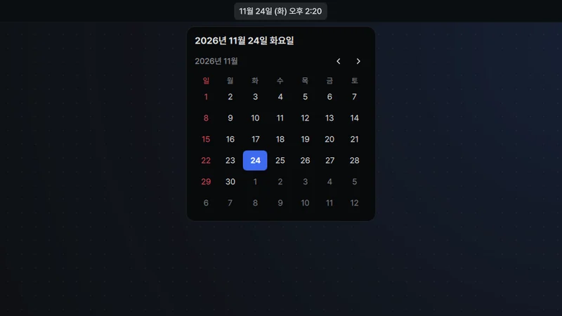
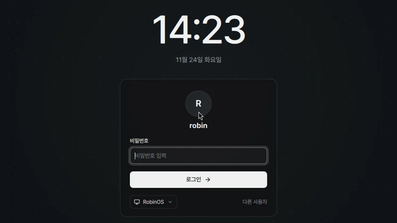
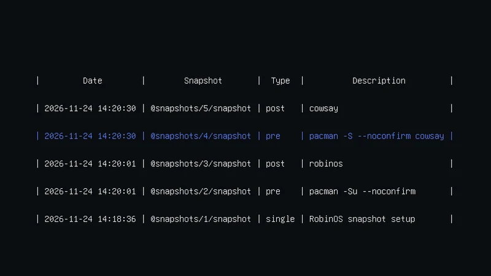

미션은 터미널에서
할 일과 쓸 명령을 보여 주고, 끝나면 robinctl learn check가 확인해요.
처음 켤 때부터 한국어이고, 바·런처·설정을 직접 만든 셸이 그려요. 업데이트가 잘못되면 스냅샷으로 되돌려요.

부팅 테스트가 가상 머신에서 찍은 실제 화면이에요.






윈도우 명령을 치면 리눅스에서 쓰는 명령을 알려 줘요.
터미널에서 직접 해 보는 미션 45개예요.

할 일과 쓸 명령을 보여 주고, 끝나면 robinctl learn check가 확인해요.

업데이트 전마다 시스템을 찍어 두고, 부팅 메뉴에서 그때로 켜요.
무료, 오픈 소스(GPL-3.0)예요.
약 2GB ISO · 64비트 UEFI PC
이 페이지의 화면은 다음 버전이에요. 지금 받는 v0.3은 그 전의 모습이고, 실제 PC에서는 아직 몇 대만 확인했어요.